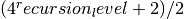
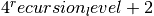

dipy.core.subdivide_octahedron¶
Create a unit sphere by subdividing all triangles of an octahedron recursively.
The unit sphere has a radius of 1, which also means that all points in this sphere (assumed to have centre at [0, 0, 0]) have an absolute value (modulus) of 1. Another feature of the unit sphere is that the unit normals of this sphere are exactly the same as the vertices.
This recursive method will avoid the common problem of the polar singularity, produced by 2d (lon-lat) parameterization methods.
-
dipy.core.subdivide_octahedron.create_unit_hemisphere(recursion_level=2)¶ Creates a unit sphere by subdividing a unit octahedron, returns half the sphere.
Parameters: recursion_level : int
Level of subdivision, recursion_level=1 will return an octahedron, anything bigger will return a more subdivided sphere. The sphere will have  vertices.
Returns: HemiSphere : :
Half of a unit sphere.
See also
create_unit_sphere,Sphere,HemiSphere
-
dipy.core.subdivide_octahedron.create_unit_sphere(recursion_level=2)¶ Creates a unit sphere by subdividing a unit octahedron.
Starts with a unit octahedron and subdivides the faces, projecting the resulting points onto the surface of a unit sphere.
Parameters: recursion_level : int
Level of subdivision, recursion_level=1 will return an octahedron, anything bigger will return a more subdivided sphere. The sphere will have  vertices.
Returns: Sphere : :
The unit sphere.
See also
create_unit_hemisphere,Sphere